Cambridge AS9618 | Paper 2 | Section 11: Programming
Translating descriptions into Cambridge pseudocode
Flexible-depth lesson
S11.01 | Learn from the diagrams, test the method, then choose the practice you need.
Choose a Quick, Full or Deep route
Quick route
Use the diagnostic, learning objectives, first worked example and foundation question. Stop once the learner can explain the central distinction accurately.
Full route
Use every knowledge-point material set, the worked method, the terminology check and all questions.
Deep route
Add the prerequisite refresher, ask learners to connect the concept checklist, discuss the labelled extension and complete a transfer question without a model answer.
Part 1 | optional depth
Prerequisite knowledge and quick diagnostic
Recall S9.07 before starting this lesson.
Give one accurate definition or method step before continuing. If it is missing, revisit only that prerequisite.
Open optional prerequisite refresher
Document an algorithm using structured English, a flowchart or pseudocode; write pseudocode from structured English or a flowchart, and draw a flowchart from structured English or pseudocode while preserving the same algorithm.
Use structured English, flowcharts and pseudocode; convert between representations.
Part 2 | knowledge-point material sets
Learn each point through visuals
Follow the map, the three-part explanation and the concrete cue. Open precise wording only after the idea is clear.
Open the concept checklist and choose what to teach
PartsImplement and write pseudocode from a given design presented as either a flowchart or structured English
ConnectionsFor translating descriptions into cambridge pseudocode, identify the required concept before describing its mechanism or consequence
PurposeTo translate structured English, identify its controlled verbs and indentation before selecting Cambridge constructs
S11.01 diagrams
1 / 4
01
Comparison · 1 of 4
Translate a flowchart or structured English into pseudocode
Open text transcript
Follow a flowchart from Start: translate input/output symbols, decisions, branches and loop-back arrows without losing a path.
From structured English, preserve the controlled verbs, conditions and indentation when selecting Cambridge pseudocode constructs.
Dry-run the source description and pseudocode with the same data; matching paths and outputs confirm equivalence.
02
Diagram · 2 of 4
Java file handling helps understanding, but does not replace pseudocode
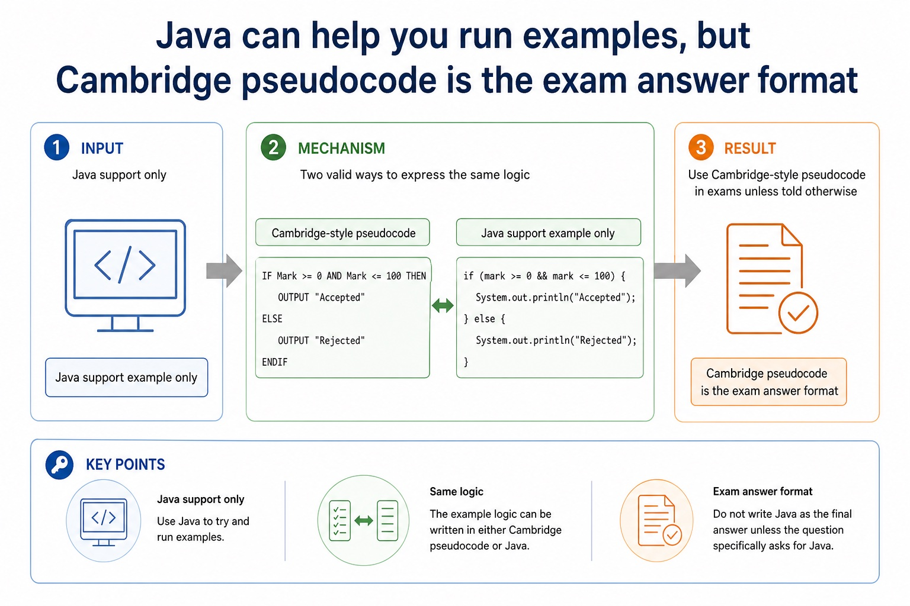
Open text transcript
Java support only
Cambridge-style pseudocode
OPENFILE "Scores.txt" FOR READ
WHILE NOT EOF("Scores.txt")
READFILE "Scores.txt", Line
OUTPUT Line
ENDWHILE
CLOSEFILE "Scores.txt"
03
Concrete example · 3 of 4
Java can help you run examples, but Cambridge pseudocode is the exam answer format
Open text transcript
Java support only
Cambridge-style pseudocode
IF Mark = 0 AND Mark <= 100 THEN
OUTPUT "Accepted"
ELSE
OUTPUT "Rejected"
ENDIF
Java support example only
04
Concrete example · 4 of 4
Java debugging tools help practice, but Cambridge pseudocode remains the exam format
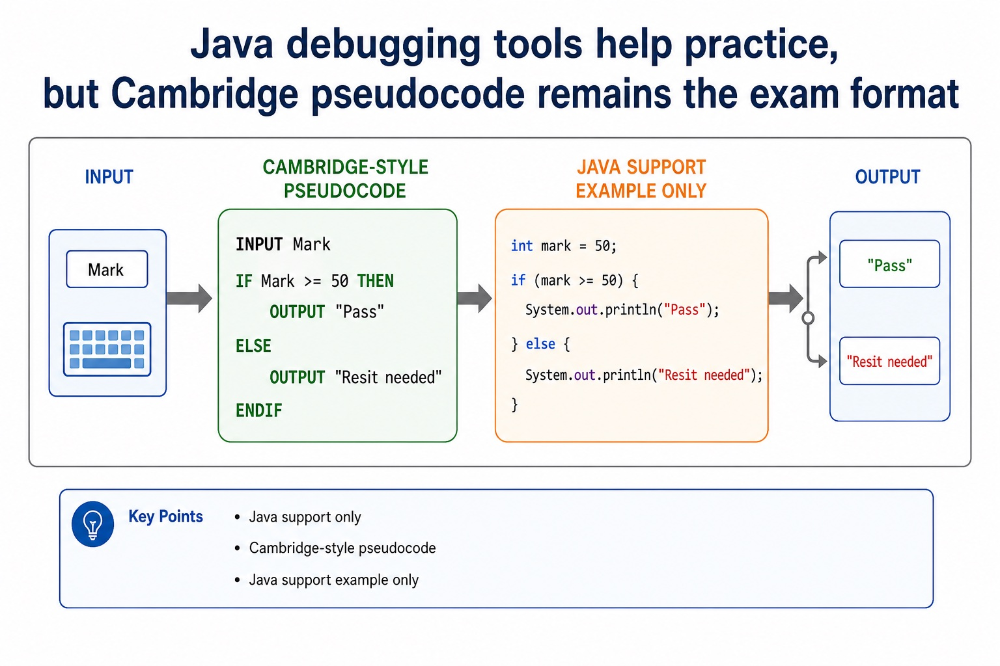
Open text transcript
Java support only
Cambridge-style pseudocode
INPUT Mark
IF Mark = 50 THEN
OUTPUT "Pass"
OUTPUT "Resit needed"
Java support example only
int mark = 50;
Open precise syllabus wording
Write pseudocode from a flowchart or structured-English description.
Implement and write pseudocode from a given design presented as either a flowchart or structured English.
Supporting diagram library
1 / 31
01
Diagram · 1 of 31
Flowcharts use symbols to show control flow
Open text transcript
A terminator marks START or END; a parallelogram marks INPUT or OUTPUT.
A rectangle marks a calculation or assignment; a diamond marks a yes/no decision.
Flow lines show the next step and decision branches must be labelled.
A loop must contain a route that can change its condition.
02
Diagram · 2 of 31
Three control-flow ideas
Open text transcript
Sequence answers what happens next and depends on statement order.
Selection answers which path is taken and uses IF or CASE structures.
Iteration answers what repeats and when repetition stops.
FOR, WHILE and REPEAT are iteration forms with different controls.
03
Diagram · 3 of 31
Loops repeat with control
Open text transcript
A FOR loop uses a counter range and checks whether the next iteration is within its bounds.
A FOR loop may execute zero times when its bounds are incompatible.
A WHILE loop checks its condition before each iteration and may execute zero times.
A REPEAT loop checks after the body and therefore runs at least once.
04
Diagram · 4 of 31
Same logic, different exam language
Open text transcript
Cambridge pseudocode uses IF, THEN, ELSE and ENDIF for a two-way selection.
Mark 50 follows the pass branch when the condition uses greater than or equal to 50.
Java braces may support understanding but are not Cambridge pseudocode.
05
Diagram · 5 of 31
Conditions decide the path
Open text transcript
Use IF for a Boolean condition or range and close it with ENDIF.
Use CASE for several discrete values of one expression and close it with ENDCASE.
Test marks 49, 50 and 51 to verify the pass boundary.
06
Diagram · 6 of 31
Order changes meaning
Open text transcript
Sequence
Correct order
INPUT Price
INPUT Quantity
Total <- Price Quantity
OUTPUT Total
Wrong order
A sequence is simple, but not optional. Using a value before it has been input is algorithmic optimism, not a method.
07
Diagram · 7 of 31
Run a small loop by hand
Open text transcript
Interactive trace
FOR Count <- 1 TO
Choose a loop limit to build a trace table.
08
Diagram · 8 of 31
FOR APPEND adds new data to the end
Open text transcript
Append pattern
Cambridge-style pseudocode
OPENFILE "Scores.txt" FOR APPEND
WRITEFILE "Scores.txt", "Lin,85"
CLOSEFILE "Scores.txt"
Reasoning
Use FOR APPEND when previous records should remain and new records should be added after them.
09
Diagram · 9 of 31
CLOSEFILE completes the pattern
Open text transcript
Closing files
Reliability Data written to a file should be properly finished and released.
Resources The operating system can free the file handle or lock.
Exam pattern Questions often expect CLOSEFILE after reading or writing.
10
Diagram · 10 of 31
EOF prevents reading past the end of the file
Open text transcript
EOF loop
Count records
Count <- 0
OPENFILE "Orders.txt" FOR READ
WHILE NOT EOF("Orders.txt")
READFILE "Orders.txt", OrderLine
Count <- Count + 1
ENDWHILE
11
Diagram · 11 of 31
The mode controls what the program intends to do with the file
Open text transcript
File modes
Exam warning
FOR READ
read existing data from a file
do not use it to add new records
FOR WRITE
write new file contents
may overwrite existing contents
12
Diagram · 12 of 31
Files store data outside the running program
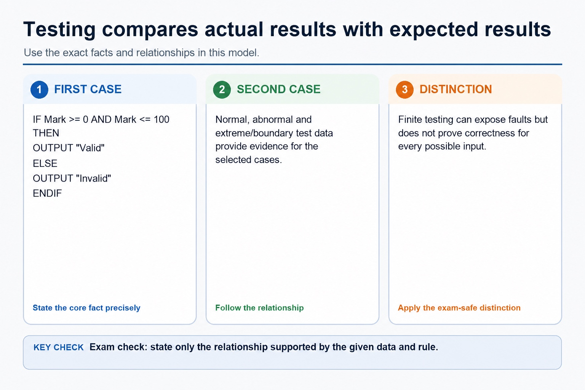
Open text transcript
Volatile variable
A variable value is lost when the program ends unless it is saved elsewhere.
Persistent file
A file such as Scores.txt can keep records for the next time the program runs.
13
Diagram · 13 of 31
Read every line using WHILE NOT EOF
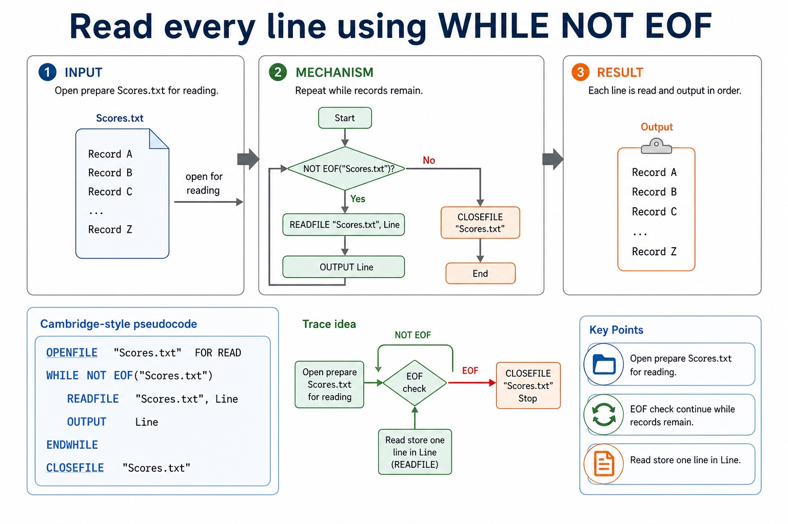
Open text transcript
Read pattern
Cambridge-style pseudocode
OPENFILE "Scores.txt" FOR READ
WHILE NOT EOF("Scores.txt")
READFILE "Scores.txt", Line
OUTPUT Line
ENDWHILE
CLOSEFILE "Scores.txt"
14
Diagram · 14 of 31
FOR WRITE writes new contents
Open text transcript
Write pattern
Cambridge-style pseudocode
OPENFILE "Report.txt" FOR WRITE
WRITEFILE "Report.txt", "Name,Mark"
WRITEFILE "Report.txt", "Ada,72"
CLOSEFILE "Report.txt"
Reasoning
Use FOR WRITE when the program is creating or replacing the file contents.
15
Diagram · 15 of 31
Abnormal data is invalid data that should be rejected
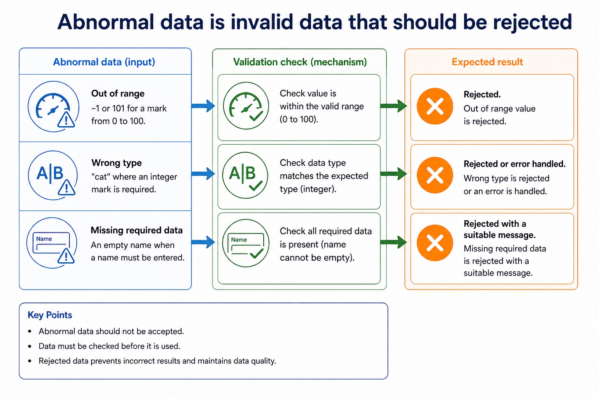
Open text transcript
Abnormal data is invalid data that should be rejected or handled.
For a mark from 0 to 100, -1 and 101 are out-of-range abnormal data.
The string "cat" is wrong-type abnormal data when an integer mark is required.
16
Diagram · 16 of 31
Normal data is valid, typical data inside the allowed range
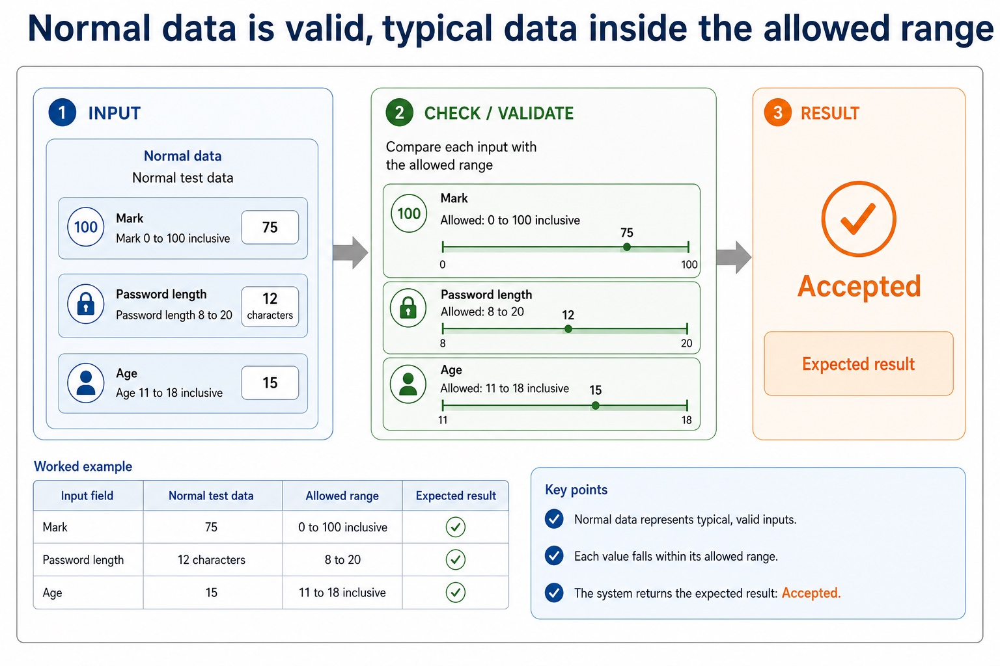
Open text transcript
Normal data
Normal test data
Expected result
Mark 0 to 100 inclusive
Accepted
Password length 8 to 20
12 characters
Age 11 to 18 inclusive
17
Diagram · 17 of 31
Testing compares actual results with expected results
Open text transcript
IF Mark = 0 AND Mark <= 100 THEN
Normal, abnormal and extreme/boundary test data provide evidence for the selected cases.
Finite testing can expose faults but does not prove correctness for every possible input.
18
Diagram · 18 of 31
A clear test table turns thinking into marks
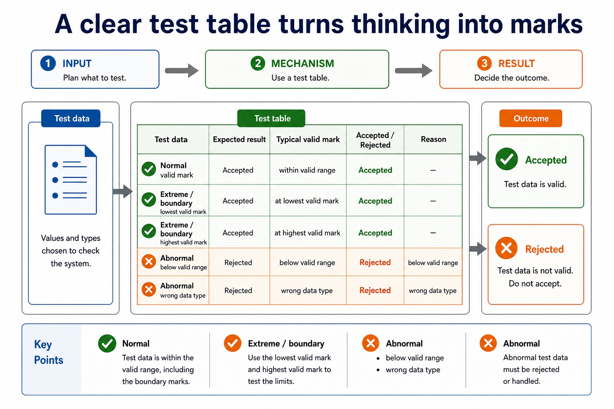
Open text transcript
A test table records test data, its category and the expected result.
Use 50 as normal accepted data and 0 or 100 as valid extreme/boundary accepted data.
Use -1, 101 or a wrong-type input as abnormal data with a rejected or handled expected result.
19
Diagram · 19 of 31
Testing checks validation against expected results
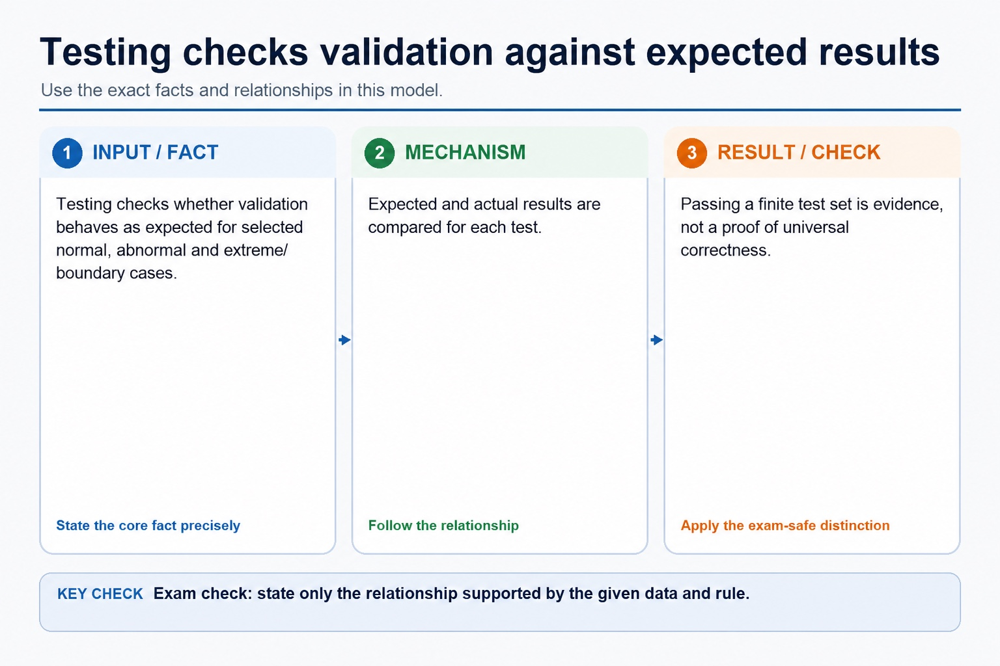
Open text transcript
Testing checks whether validation behaves as expected for selected normal, abnormal and extreme/boundary cases.
Expected and actual results are compared for each test.
Passing a finite test set is evidence, not a proof of universal correctness.
20
Diagram · 20 of 31
A breakpoint pauses execution at a chosen line
Open text transcript
Breakpoint
Best place
Place a breakpoint before or on the line where the suspected decision or calculation happens.
What to inspect
Check variable values, the next line to execute, and whether the condition is true or false.
What not to do
Do not scatter breakpoints randomly. Random pausing is just procrastination wearing a technical hat.
21
Diagram · 21 of 31
Debugging locates and corrects faults
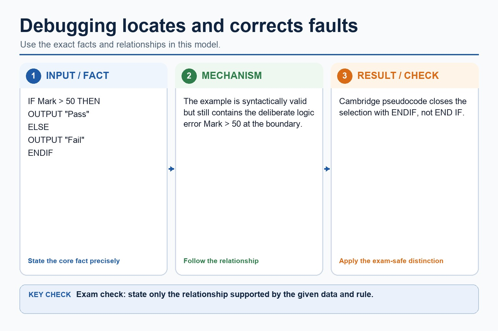
Open text transcript
IF Mark 50 THEN
The example is syntactically valid but still contains the deliberate logic error Mark 50 at the boundary.
Cambridge pseudocode closes the selection with ENDIF, not END IF.
22
Diagram · 22 of 31
Step through code one instruction at a time
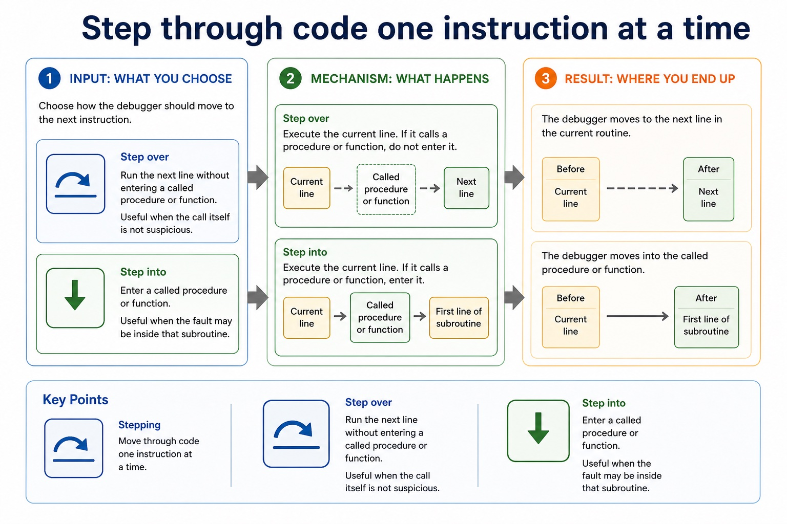
Open text transcript
Stepping
Step over
Run the next line without entering a called procedure or function. Useful when the call itself is not suspicious.
Step into
Enter a called procedure or function. Useful when the fault may be inside that subroutine.
23
Diagram · 23 of 31
Watching variables shows state changes while stepping
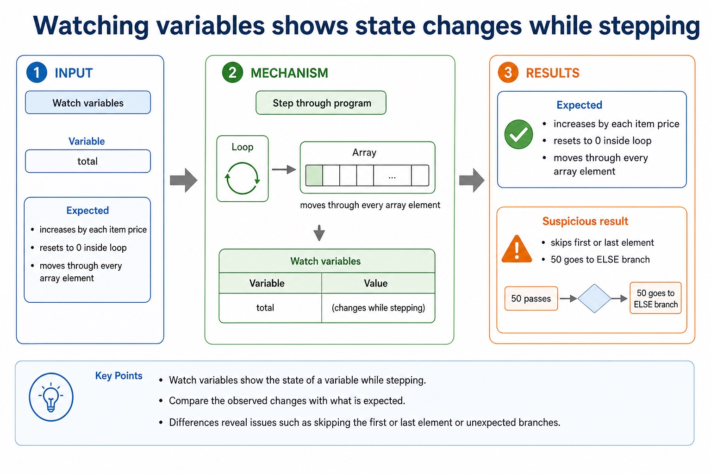
Open text transcript
Watch variables
Variable
Expected
Suspicious result
increases by each item price
resets to 0 inside loop
moves through every array element
skips first or last element
24
Diagram · 24 of 31
Use Cambridge array notation consistently
Open text transcript
Java support example only
scores[0] = 72;
System.out.println(scores[0]);
Cambridge-style pseudocode
Scores[1] <- 72
OUTPUT Scores[1]
Cambridge examples often use 1-based indexing unless a question defines otherwise. Follow the question's stated indexing.
25
Diagram · 25 of 31
Use the assignment arrow for storing a value
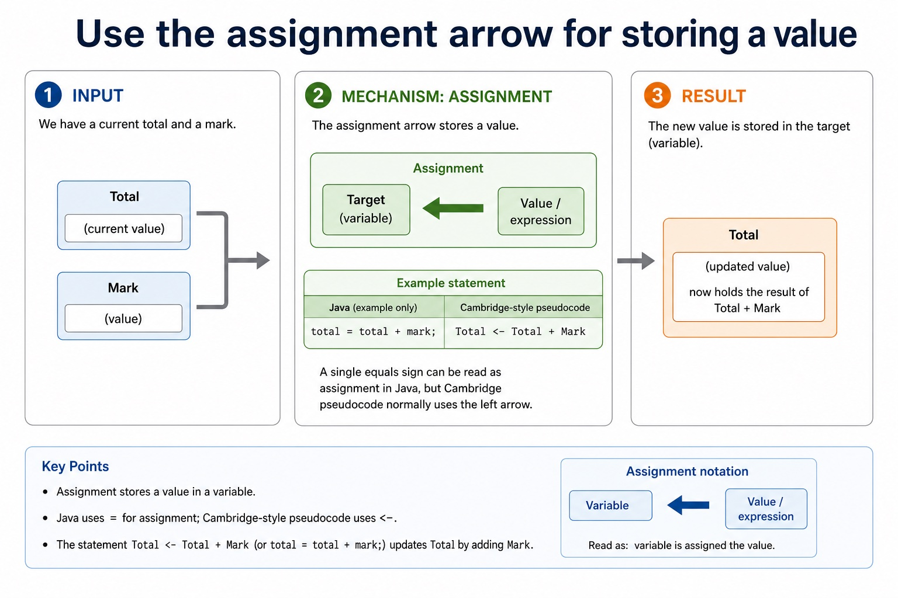
Open text transcript
Assignment
Java support example only
total = total + mark;
Cambridge-style pseudocode
Total <- Total + Mark
A single equals sign can be read as assignment in Java, but Cambridge pseudocode normally uses the left arrow.
26
Diagram · 26 of 31
5-minute quiz focus
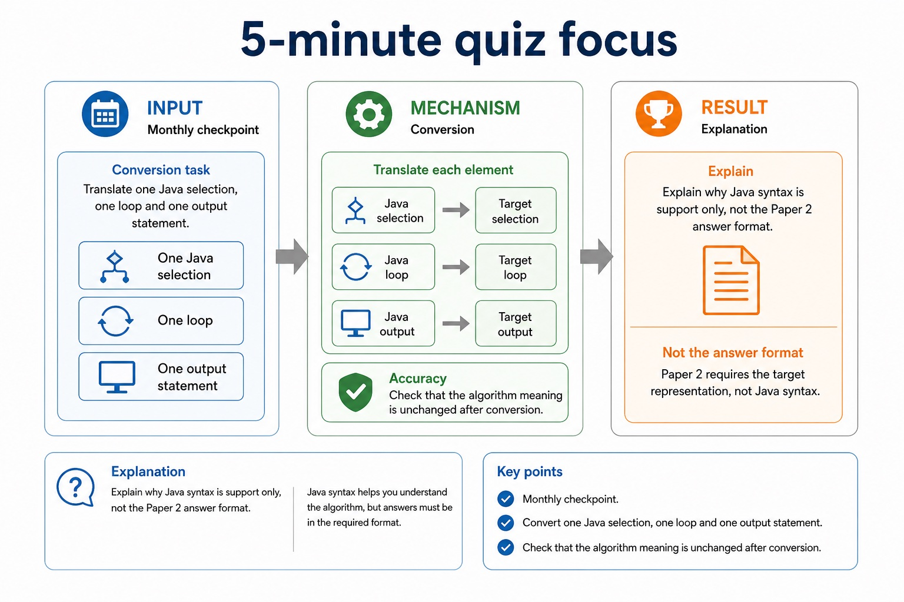
Open text transcript
Monthly checkpoint
Conversion
Translate one Java selection, one loop and one output statement.
Explanation
Explain why Java syntax is support only, not the Paper 2 answer format.
Accuracy
Check that the algorithm meaning is unchanged after conversion.
27
Diagram · 27 of 31
Replace library calls with algorithm keywords
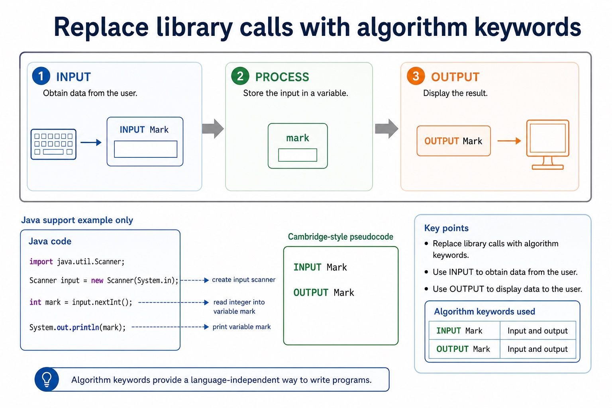
Open text transcript
Input and output
Java support example only
Scanner input = new Scanner(System.in);
mark = input.nextInt();
System.out.println(mark);
Cambridge-style pseudocode
INPUT Mark
OUTPUT Mark
28
Diagram · 28 of 31
Choose the loop keyword that matches the logic
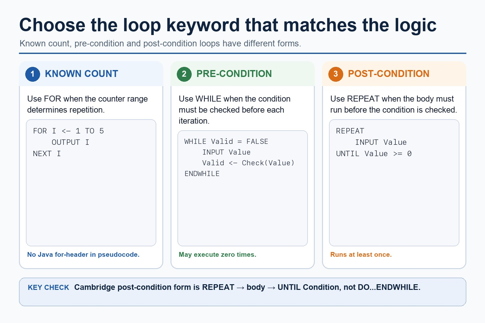
Open text transcript
Use FOR when a counter range determines the number of iterations.
Use WHILE when the condition is checked before each iteration.
Use REPEAT, then the body, then UNTIL Condition for a post-condition loop.
Do not use DO...ENDWHILE as the Cambridge post-condition form.
29
Diagram · 29 of 31
Use IF , THEN , ELSE , ENDIF
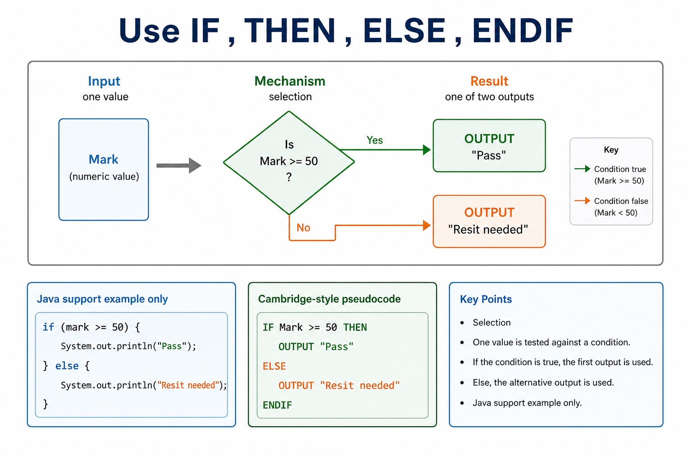
Open text transcript
Selection
Java support example only
if (mark = 50) {
System.out.println("Pass");
} else {
System.out.println("Resit needed");
Cambridge-style pseudocode
IF Mark = 50 THEN
30
Diagram · 30 of 31
Spot the Java-only syntax in an exam answer
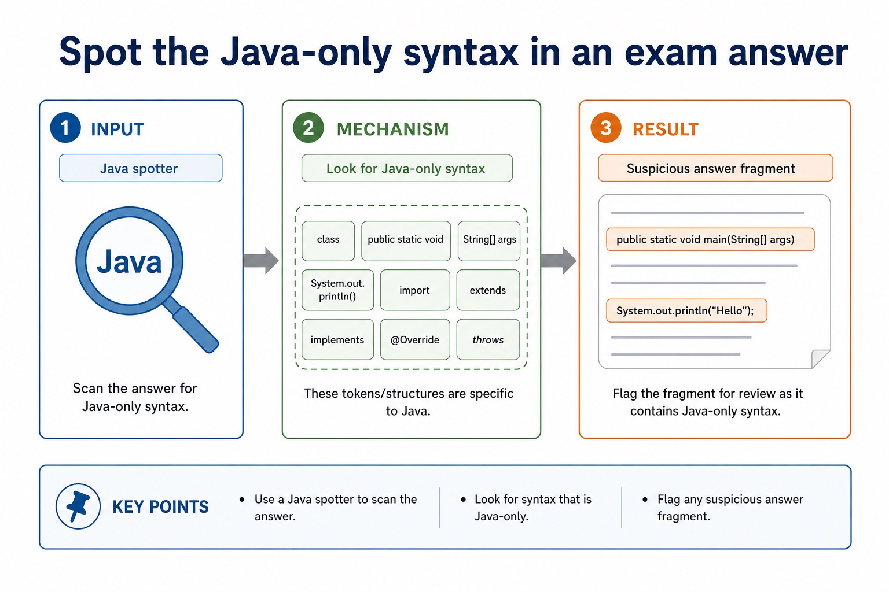
Open text transcript
Java spotter
Suspicious answer fragment
31
Diagram · 31 of 31
Use PROCEDURE and FUNCTION instead of Java method wrappers
Open text transcript
Subroutines
Java support example only
static boolean isValidMark(int mark) {
return mark = 0 && mark <= 100;
Cambridge-style pseudocode
FUNCTION IsValidMark(Mark : INTEGER) RETURNS BOOLEAN
RETURN Mark = 0 AND Mark <= 100
ENDFUNCTION
Apply the idea
Worked method
01Flowchart sum loop
02A flowchart sets Total to 0 and repeats input/add until Value = -1.
03Pseudocode uses Total <- 0; REPEAT; INPUT Value; IF Value < -1 THEN Total <- Total + Value; ENDIF; UNTIL Value = -1; OUTPUT Total.
Open precise terminology and exam facts
Implement and write pseudocode from a given design presented as either a flowchart or structured English.
To translate a flowchart, follow arrows from Start, convert input/output symbols directly, convert diamonds into IF/CASE or loop conditions, and preserve every branch and reconnection. To translate structured English, identify its controlled verbs and indentation before selecting Cambridge constructs.
The answer must be Cambridge pseudocode, not Java: use assignment arrow, THEN/ENDIF, FOR...NEXT, WHILE...ENDWHILE or REPEAT...UNTIL as appropriate. Trace both versions with the same data to confirm equivalence.
For translating descriptions into cambridge pseudocode, identify the required concept before describing its mechanism or consequence.
Beyond syllabus / 延伸知识（不要求背诵）
consistent style, modularity and automated tests reduce maintenance errors in larger programs.
Part 3 | select by learner need
Practice by question type
designrecallfoundation4 marks
Question 1. Translate this structured-English design into Cambridge pseudocode: input five temperatures; count those below zero; output the count.
Show answer and marking guidance
Answer: initialises count to 0; uses a five-iteration count-controlled loop with INPUT; tests Temperature < 0 and increments count; outputs count after the loop with coherent Cambridge syntax
Marking guidance: Do not accept Java syntax such as int, braces or System.out as Cambridge pseudocode.
Common error: For the command word design, perform that exact action; do not replace it with an unrelated fact.
explainexplainapplication2 marks
Question 2. How is a flowchart decision normally translated?
Show answer and marking guidance
Answer: As a selection or loop condition, depending on where arrows reconnect.
Marking guidance: Award one mark for each distinct, technically accurate point or method step.
Common error: Do not repeat the same point in different words; each mark needs a separate idea or method step.
staterecalltransfer2 marks
Question 3. State two precise facts about translating descriptions into cambridge pseudocode.
Show answer and marking guidance
Answer: Implement and write pseudocode from a given design presented as either a flowchart or structured English. To translate a flowchart, follow arrows from Start, convert input/output symbols directly, convert diamonds into IF/CASE or loop conditions, and preserve every branch and reconnection. To translate structured English, identify its controlled verbs and indentation before selecting Cambridge constructs.
Marking guidance: Award one mark for each distinct fact; do not credit a repeated point.
Common error: Do not copy the worked example unchanged; transfer the method and check it against the new context.
Related past-paper indexes
Reference
Marks
Command word
Question type
9618/22/S/25 Q10(a)
8
complete
trace
9618/21/S/25 Q7(a)
6
write
write
9618/23/S/25 Q7(a)(i)
5
write
write
9618/21/S/25 Q1(c)
3
complete
recall
Index only: Cambridge question and mark-scheme wording is not reproduced on this public course page.
Part 4 | close when ready
Summary and exam reminders
Summary
Define translating descriptions into cambridge pseudocode with the exact technical vocabulary expected by the syllabus.
Use the lesson method on a fresh context and show the intermediate decision, representation or calculation.
Match the shape of the answer to the command word and the available marks.
Check the final answer against the scenario instead of repeating a memorised sentence.
Common error to correct
Students often think working Java automatically means good pseudocode. Correction: Paper 2 rewards clear Cambridge-style algorithm expression.
Exam technique
Follow the command word: state gives a fact; explain links a cause to a consequence; compare covers both sides.
Match the number of independent points or method steps to the available marks.
For translating descriptions into cambridge pseudocode, use the exact technical term before applying it to the scenario.